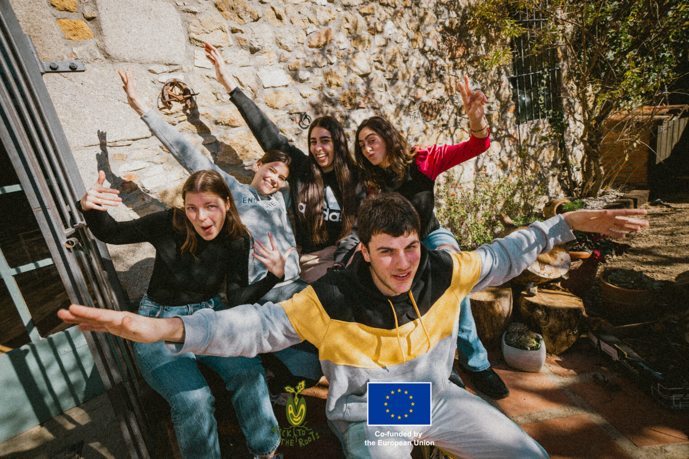
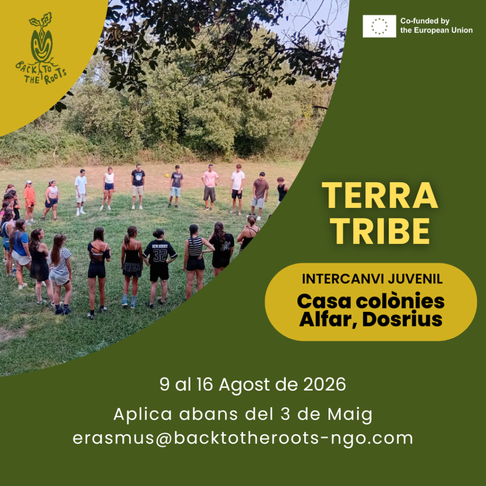

Oportunidades
Extendemos nuestras ramas
Como un árbol que crece y llega cada vez más lejos, nuestras acciones conectan personas, ideas y territorios. Participa en nuestras convocatorias de intercambios y formaciones para jóvenes y entidades.
Inscripciones abiertas
TerraTribe 2026
Tras el éxito del año pasado, TerraTribe vuelve con más fuerza.
Inscripciones abiertas

TerraTribe 2026
9–16 agosto · Casa de Colonias Alfar, Dosrius (Barcelona)Un intercambio juvenil entre España y Francia para vivir un verano diferente.
30 jóvenes: 15 de Francia y 15 de España, de 14 a 17 años
España y Francia
En inglés, en un contexto real y dinámico
Alojamiento, dietas y transporte incluidos
¿Qué encontrarás?
Actividades de educación ambiental y sostenibilidad, dinámicas de intercambio cultural.
¿Buscas más convocatorias? Escríbenos a info@backtotheroots-ngo.com
Trayectoria
Convocatorias anteriores
Algunas de las oportunidades que hemos coordinado en los últimos años.
Roots Reloaded — Re-generation EU
ECOSYSTEMS
Green Routes
SONIC
E-motions
Champions of Carbon Neutrality
Soul Kitchen
I CREATE
I REVIVE
TerraTribe 2025